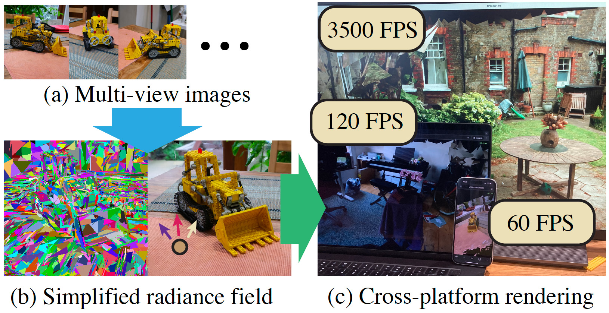

(a) Given multi-view RGB images, (b) we reconstruct a simplified radiance field as a textured triangle soup using differentiable rasterization. (c) The resulting scene can be rendered within a standard depth-tested rasterization pipeline, enabling seamless visualization across devices—including a high-end desktop with a dedicated GPU, a consumer-grade laptop (MacBook Pro with an M3 Pro chip), and even a smartphone (iPhone 15).
Abstract
Radiance field reconstruction aims to recover high-quality 3D representations from multi-view RGB images. Recent advances, such as 3D Gaussian splatting, enable real-time rendering with high visual fidelity on sufficiently powerful graphics hardware. However, efficient online transmission and rendering across diverse platforms requires drastic model simplification, reducing the number of primitives by several orders of magnitude. We introduce DiffSoup, a radiance field representation that employs a soup (i.e., a highly unstructured set) of a small number of triangles with neural textures and binary opacity. We show that this binary opacity representation is directly differentiable via stochastic opacity masking, enabling stable training without a mollifier (i.e., smooth rasterization). DiffSoup can be rasterized using standard depth testing, enabling seamless integration into traditional graphics pipelines and interactive rendering on consumer-grade laptops and mobile devices.
Resources
Paper / Video / CodeVideo
Citation
@inproceedings{tojo2026diffsoup,
author = {Tojo, Kenji and Bickel, Bernd and Umetani, Nobuyuki},
title = {DiffSoup: Direct Differentiable Rasterization of Triangle Soup for Extreme Radiance Field Simplification},
booktitle = {Proceedings of the IEEE/CVF Conference on Computer Vision and Pattern Recognition (CVPR)},
year = {2026}
}